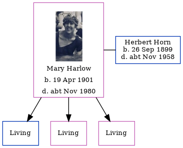

Mabel Ellen Frances Wiles (née Horn) 1895 - c1963
[ Home ] | [ Calendar ] | [ Surnames Index ] | [ Census Index ] | [ Family History ]A tweeny - maid and the child of Herbert Horn (a carter) and Mabel Gibson, Mabel Horn, the second cousin twice-removed on the father's side of Nigel Horne, was born in Margate, Kent, England on Nov 23, 18951,2,3,4,5, was baptized there at St John The Baptist Church on Aug 16, 1898. She married Leonard Wiles (an electric welder with whom she had 1 surviving child, Grace M) in Thanet, Kent, England around May 19176.
During her life, she was living at 6 Grange Road in Margate on Mar 31, 19011; at The Eyrie, Rotburgh Road, Westgate, Kent on Apr 2, 19117; at 6 Princes Crescent in Margate in 1918; and at 13 Craner's Road, Coventry, Warwickshire, England on Sep 29, 19392. During 1918, she was serving in the army (regiment: Women's Army Auxiliary Corps; Service number: 35970).
She died c. Nov 1963 in Coventry4.
Parents
- Herbert James was born on Feb 14, 1865
- Mabel Ellen was born on Jan 15, 1873
Citations
- 1901 England, Wales & Scotland Census - Findmypast (was age 5 and the daughter of the head of the household)
- 1939 Register - Findmypast (was the wife of the head of the household)
- England & Wales births 1837-2006 - Findmypast
- England & Wales deaths 1837-2007 - Findmypast
- Kent, Canterbury Archdeaconry Baptisms - Findmypast
- England & Wales Marriages 1837-2005 - Findmypast
- 1911 Census for England & Wales - Findmypast (was age 16 and a servant in the household)
Media
Kent, Canterbury Archdeaconry baptisms - GBPRS/CANT/B/96228962
England & Wales births 1837-2006 - BMD/B/1896/1/AZ/000280/152
England & Wales marriages 1837-2005 - BMD/M/1917/2/AZ/000471/135
British Army, Women's Army Auxiliary Corps 1917-1920 Transcription - GBM-WO398-000002986
1939 Register - TNA/R39/5649/5649H/004/09
1911 Census For England & Wales - GBC-1911-RG14-04486-0503-10
England & Wales deaths 1837-2007 - BMD/D/1963/4/AZ/000925/193
England Births & Baptisms 1538-1975 - R_884646303
Family Tree
Generated by ged2site. Last updated on Jun 11, 2024